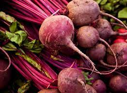

- CEJPC
- Colégio Estadual James Patrick Clark


Análise de desenvolvimento de Beterraba (Beta vulgaris) em diferentes tipos de adubação 
A Beta vulgaris conhecida popularmente como Beterraba. A beterraba é uma raiz tuberosa de cultura anual, comumente utilizada na alimentação humana, na produção de açúcar e etanol, enquanto as folhas e talos são frequentemente descartados. O preseente trabalho investiga a influência de diferentes tipos de adubos orgânicos no desenvolvimento da beterraba, visando compreender como esses adubos afetam o crescimento
Resultados e Discuções
As beterrabas foram plantadas em 12 vasos, preenchidos com solo de terra vermelha, e cada vaso recebeu um tuberculo de beterraba. Três tipos de adubo (vaca, galinha e carneiro) foram utilizados e um grupo controle sem adubos de origem animal. A irrigação foi realizada semanalmente com aproximadamente 240ml de água por vaso. O monitoramento semanal acompanhou o crescimento, aparência e saúde das plantas. As amostras de beterrabas cultivadas em adubo de carneiro apresentaram um melhor desenvolvimento, seguidos das plantas cultivadas em adubos de galinha, vaca e o grupo controle. Ao decorrer do desenvolvimento, as plantas de todos os adubos e do grupo controle teve seu tamanho reduzido, e algumas amostras morreram no processo de desenvolvimento. A causa da morte e redução do tamanho das plantas foi devido a altas temperaturas enfrentadas pelas plantas, devido a ela ser uma planta que cresce melhor em clima ameno (temperatura 10°C e 24°C).
Conclusão
Com base no experimento Beta vulgaris apresentou melhor desenvolvimento quando utilizado adubo de carneiro e menor desenvolvimento com adubo de vaca.